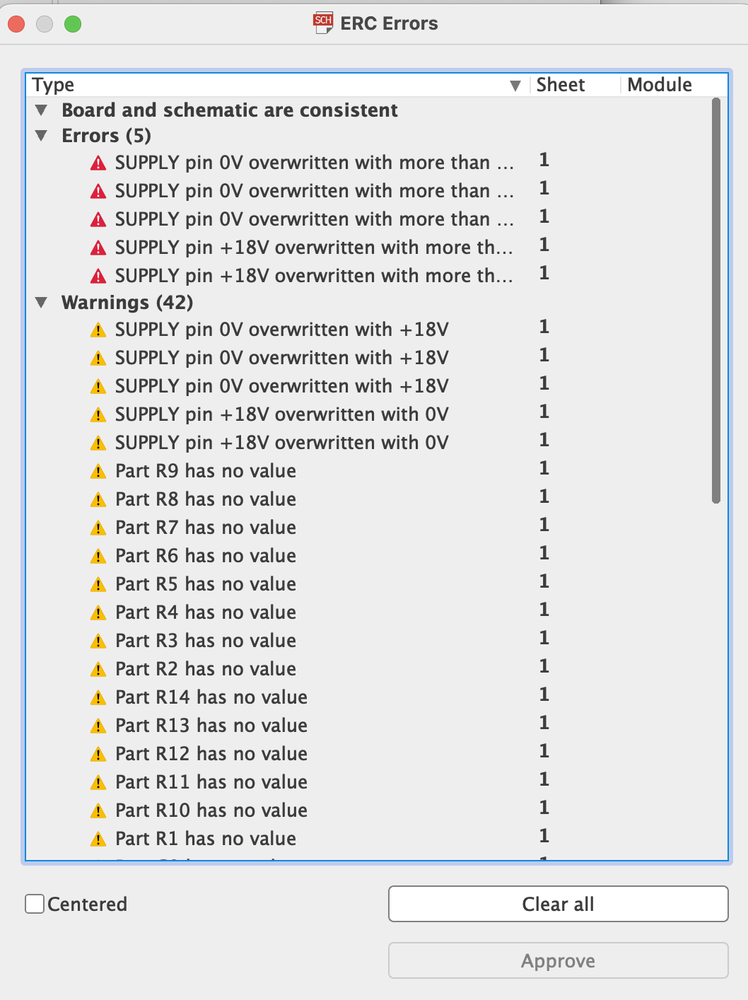
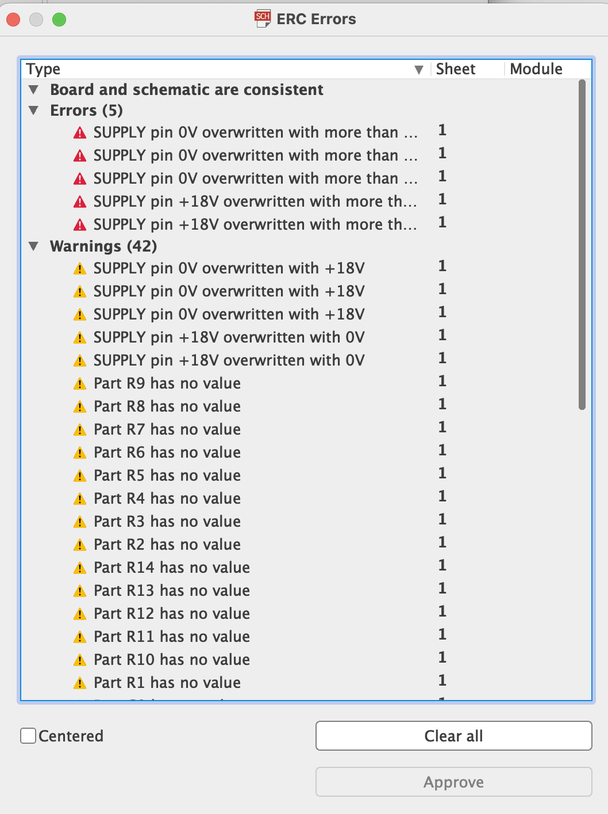

Kontrola Návrhu Schémy
Aby sme predišli neskorším komplikáciám pri návrhu dosky plošných spojov (DPS) je potrebné pozorne prehliadnuť el. schému a „opticky“ skontrolovať, či je všetko správne prepojené. K optickej kontrole môžeme využiť príkaz Show , po kliknutí na spoje sa nám všetko čo je spojené „presvieti“ a to vrátane pinov súčiastok. Následne môžeme previesť elektrickú kontrolu.
Príkaz ERC skontroluje zapojenie z hľadiska zásad správneho „elektrického“ návrhu. Každý pin súčiastky má určitý atribút napr. Pas - pasívny pin, Out - výstupný pin, Pwr - napájací pin.
Na základe týchto atribútov Erc zisťuje, či sú vzájomne spojené piny ktorých vlastností im to povoľujú, ďalej či v schéme nie sú niektoré piny nezapojené a či je napájanie obvodu prevedené korektne. Na prípadné prehrešky program upozorní výpisom chýb. Táto kontrola nezohľadňuje všetky korektné možnosti zapojenia súčiastok v obvode, má teda predovšetkým iba informatívny charakter a jej hlavnou úlohou je upozorniť na možné chyby. 
Na základe týchto atribútov Erc zisťuje, či sú vzájomne spojené piny ktorých vlastností im to povoľujú, ďalej či v schéme nie sú niektoré piny nezapojené a či je napájanie obvodu prevedené korektne. Na prípadné prehrešky program upozorní výpisom chýb. Táto kontrola nezohľadňuje všetky korektné možnosti zapojenia súčiastok v obvode, má teda predovšetkým iba informatívny charakter a jej hlavnou úlohou je upozorniť na možné chyby. 
V prípade ak sme odstránili všetky chyby, sme pripravení sa presunúť do editora dosiek.